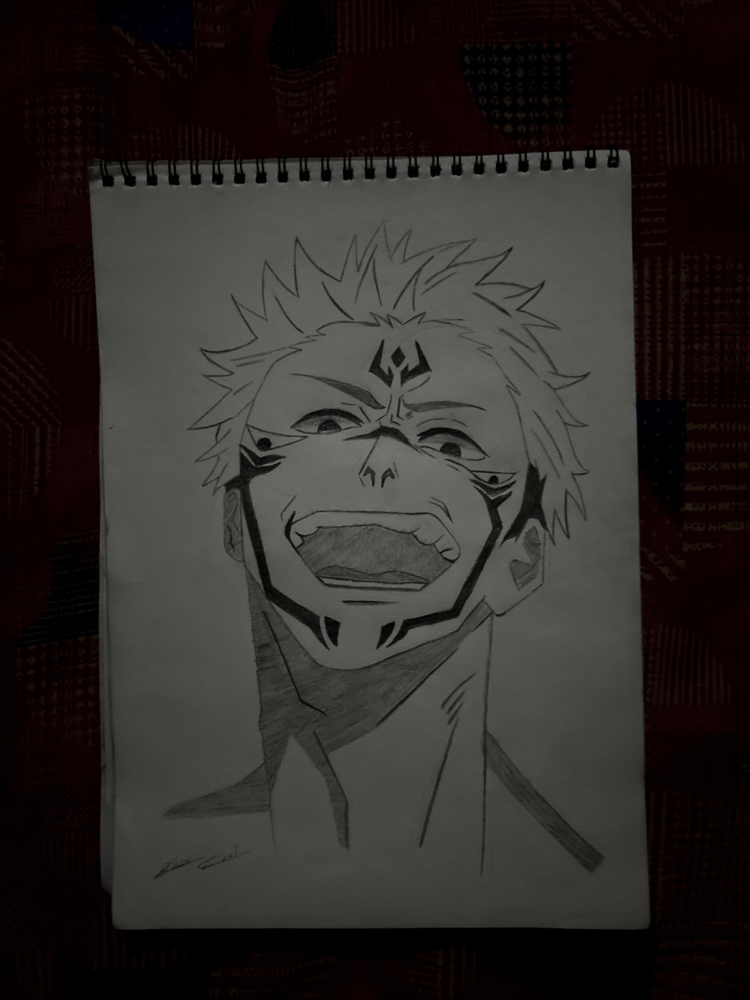
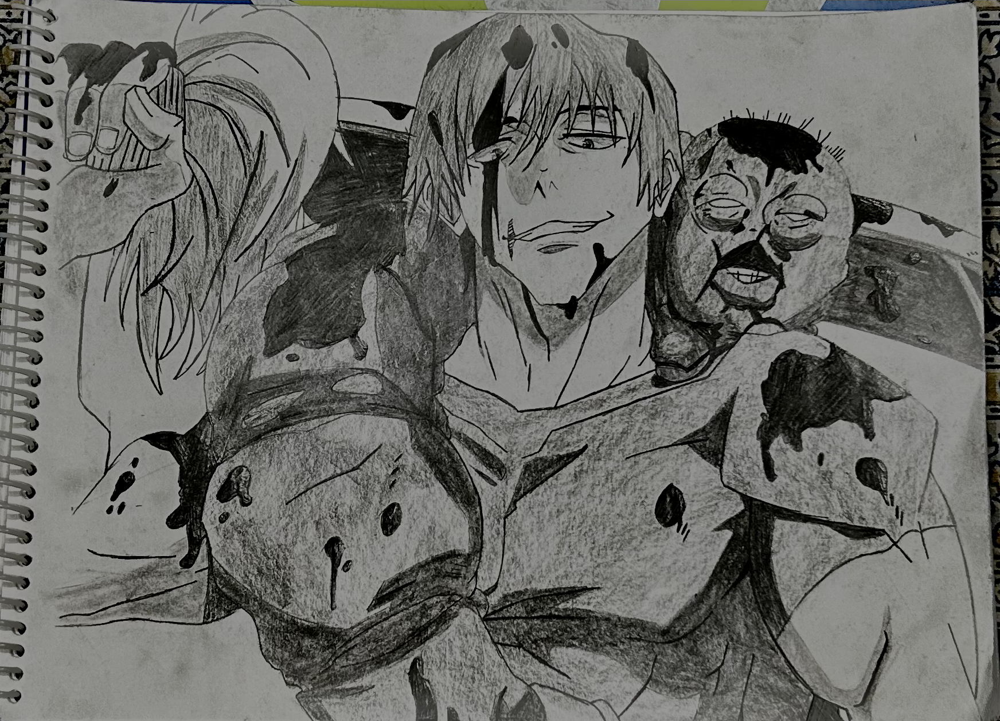
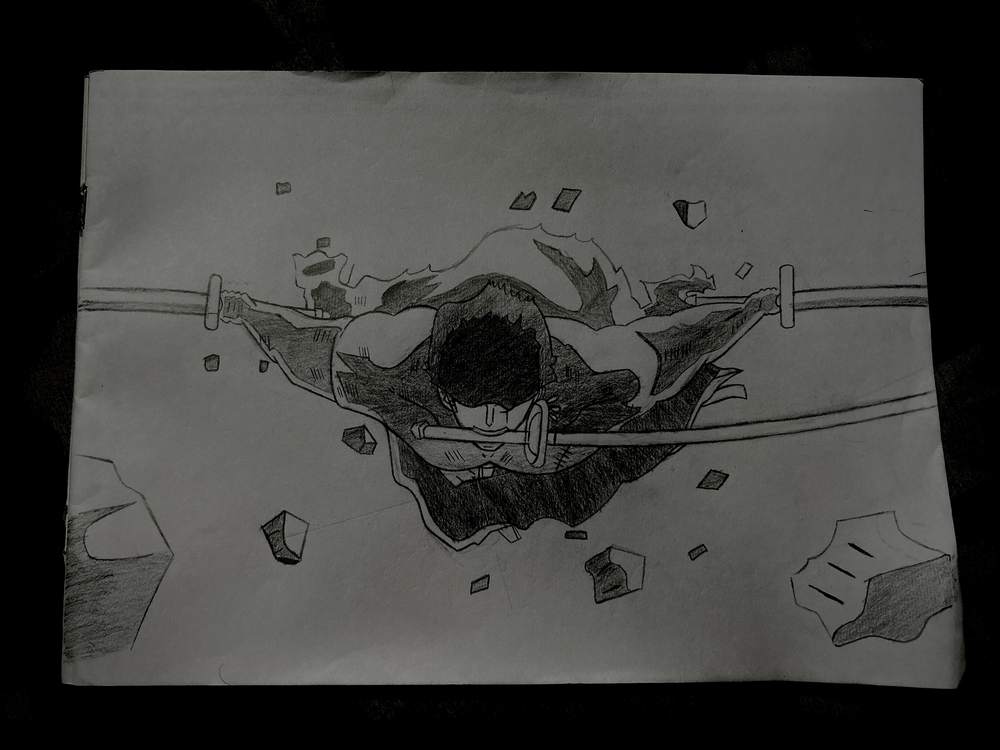

Art
I've started teaching myself the fundamentals of drawing now, moving away from references.
Note: These sketches are created using professional tutorials or reference photography to improve fundamental skills. All characters and original designs are property of their respective creators and animation studios, including MAPPA, Wit Studio, Ufotable, and Toei Animation.

Gojo

Sukuna

Toji

Eren

Levi

Mikasa

Zoro

Zoro: 103 Mercies Dragon Damnation

Sakamoto

Kokushibo

Muzan

Zenitsu

AOT Movie Poster

The Reiss Chapel

"I've always hated you" — Eren

Nanami

Megumi